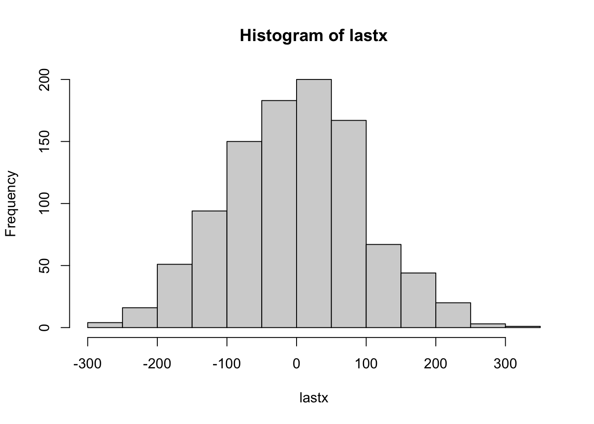
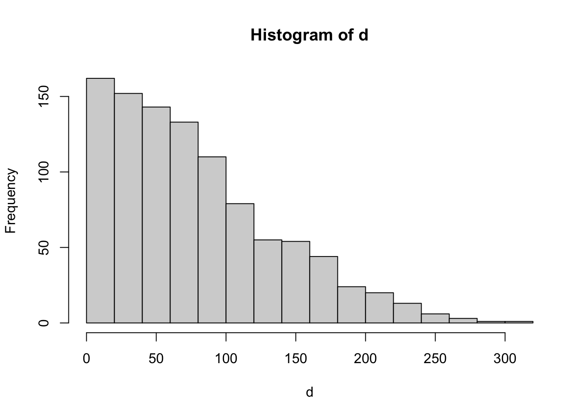
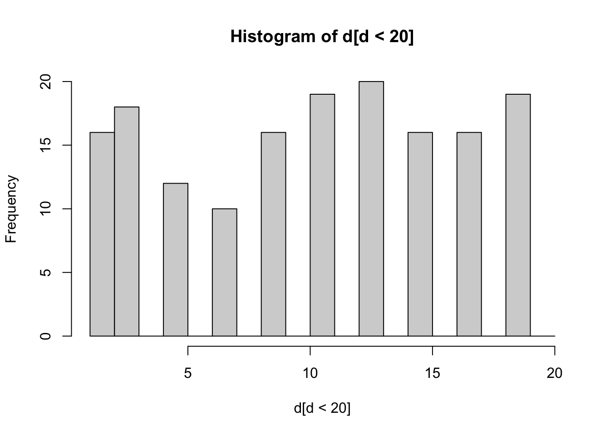

If you are new to R you can have a short dive into its main features by working through this tutorial. If you had learnt programming in another computer language, you will be able to skim over this tutorial to find the main differences from what you have learnt to how things are done in R.
A.1 Variables, vectors and matrices
# Introduction to variables# Variables can be any sequence of letter and numbers, but # it cannot start with a numberx =2x <-42+2
[1] 4
y <- x^5y
[1] 1024
# Introduction to vectorsv1 <-c(2,3,6,12)v2 <-1:100length(v2)
v3 <-seq(by=5,to=100) # call by arguments and change order or arguments# Indexing vectorsv3[3] #uses square brackets to obtain the third element of the vector
[1] 11
v3>20# produce a vector of boolean values that are TRUE when
tmax<-10000lastx<-0for (i in1:1000){ x<-random1d(tmax) lastx[i]<-x[tmax]}hist(lastx)

mean(lastx)
[1] -3.56
d<-sqrt(lastx^2)hist(d)

mean(d)
[1] 80.056
median(d)
[1] 71
max(d)
[1] 361
hist(d[d<20],breaks=c(1:20))

A.5 Spatial analysis
A.5.1 Shapefiles and Raster (Isabel Rosa)
When you work with spatial data, essentially you use two types of data:
vector data (i.e., shapefiles): stores the geometric location and attribute information of geographic features. These can be represented by points, lines, or polygons (areas).
matricial data (i.e., raster): consists of a matrix of cells (or pixels) organized into rows and columns (or a grid) where each cell contains a value representing information. They can be categorical or continuous and have multiple bands.
# read in shapefile using rgdalsc <-readOGR(".", "SantaCatarina")# import municipalities and settlements shapefilessc_mun <-readOGR(".", "SantaCatarina_mun")br_sett <-readOGR(".", "Brazil_settlements")# always good to check the contents of your dat#str(br_sett)# visualize one of the variablesspplot(sc_mun, z="Shape_Area", main ="Municipality Area (km2)")# read in rastertc<-raster("tree_cover.tif")# import loss and gain rasters heretl<-raster("loss.tif")tg<-raster("gain.tif")# for multiple band rasters, you can choose to import just one or all bands#r2 <- raster("tree_cover_multi.tif", band=2)# note that the value 255, which is Hansen's nodata value was not recognized as suchNAvalue(tg) # check firstNAvalue(tc)<-255#fix it by forcing 255 to be the nodataNAvalue(tl)<-255#fix it by forcing 255 to be the nodataNAvalue(tg)<-255#fix it by forcing 255 to be the nodata# visualize one of the rasterspar(mfrow=c(1,3))plot(tc, main ="Tree Cover (%)")plot(tl, main ="Tree Cover Loss (binary)")plot(tg, main ="Tree Cover Gain (binary)")
A.5.2 Reference systems
Coordinate systems are essential to understand when working with spatial data. Some reading material on this can be found here: Essentially, if one wants to know which position of the Earth we refer to, coordinates of geospatial data require a reference system:
geodesic/geographic coordinates need an order (lat/long), a unit (e.g., degrees) and a datum (a reference ellipsoid: e.g. WGS84)
cartesian/projected coordinates (e.g. UTM, web Mercator) need also measurement units (e.g., meters), and some way of encoding how they relate to geodesic coordinates, in which datum (this is handled by the GIS system)
A.5.3 Operations with Shapefiles
Clip: in R you can clip using the command “intersect”, so that intersect(feature to be clipped, clip feature) Select: you can use a boolean selection to subset the features of your shapefile, for instance if you just want to look at settlements with a mininum number of habitants, so that Population > median(Population) There are several options, have a look at this great tutorial: http://www.rspatial.org/spatial/rst/7-vectmanip.html
# Clip the settlement features using the Santa Catarina shapefilesc_sett<-intersect(br_sett, sc)#sc_sett$med <- sc_sett$population > median(sc_sett$population) # oops! annoyingly our population values have been stored as factors# convert to original numerical valuessc_sett$population<-as.numeric(as.vector(sc_sett$population))# careful! applying as.numeric alone it will not work!!# visualize resultsplot(sc_sett, main ="Settlements in Santa Catarina")spplot(sc_sett, z="population", main ="Population per Settlement (people)")# select settlements larger then the median valuesc_sett$med <- sc_sett$population >median(sc_sett$population)sc_largesett <- sc_sett[sc_sett$med ==1, ]# visualize resultspar(mfrow=c(1,2))plot(sc_sett, main ="All Settlements")plot(sc_largesett, main ="Largest Settlements")
A.5.4 Operations with Rasters
There are many operations you can do with rasters, and these are more frequently used in spatial analyses than shapefiles. Here I will just illustrate a couple of simple operations: - Global/Raster statistics - obtain a value that summarizes the whole raster layer - Cell statistics (pixel-by-pixel operation): obtains a value per pixel - Focal statistics (operation that takes into account neighborhood of central cell) - results in raster of same of different size - Zonal statistics - calculates summary statistics of a give raster (e.g., elevation) based on pre-defined zones (e.g., admnistrative boundaries, biomes). Outputs a table with the values per zone. For more great examples, have a look here: http://www.rspatial.org/spatial/rst/8-rastermanip.html
# sum the loss and gain rasters to know where there was simultaneous loss and gain in Santa Catarinatclg<-tl+tg par(mfrow=c(1,3))plot(tl, main ="Forest Loss")plot(tg, main ="Forest Gain")plot(tclg, main ="Forest Loss and Gain")# you can also try to create three new rasters and work with them# create a new rasterr <-raster(ncol=10, nrow=10, xmx=-80, xmn=-150, ymn=20, ymx=60)values(r) <-runif(ncell(r)) # assign random values#plot(r)# create two more rasters based on the first oner2 <- r * rr3 <-sqrt(r)# either stack or brick thems <-stack(r, r2, r3)#b <- brick(s)# Raster statistics - calculate several statistics per raster layer (i.e., sum, mean, median)cellStats(s, "sum") # outputs a value per raster# Cell statistics - calculate several statistics per pixel (i.e., sum, mean, median)par(mfrow=c(2,2))plot(r, main ="Random 1")plot(r2, main ="Random 2")plot(r3, main ="Random 3")plot(overlay(s, fun="mean"), main="Average Values") # outputs a new raster# Focal statistics - calculate mean accounting for the neighborhood values, compare with previous outcome f1 <-focal(tc, w=matrix(1,nrow=5,ncol=5) , fun=mean)plot(f1, main ="Average forest cover 5x5")# sum the loss, vary window sizef2 <-focal(tl, w=matrix(1,nrow=5,ncol=5) , fun=sum)plot(f2, main ="Total forest loss 5x5")# sum the gain, vary window sizef3 <-focal(tg, w=matrix(1,nrow=5,ncol=5) , fun=sum)plot(f3, main ="Total forest gain 5x5")# plot 4 maps with different window sizespar(mfrow=c(2,2))for(i inc(5,15,25,55)){ f_w <-focal(tc, w=matrix(1,nrow=i,ncol=i) , fun=sum)plot(f_w, main =paste0("Window size: ", i))}# Zonal Statistics - using two rasterssc_tc_mean_loss <-zonal(tc, tl, fun=mean) #average tree cover in loss areassc_tc_mean_gain <-zonal(tc, tg, fun=mean) #average tree cover in gain areas# average tree cover losssc_tc_mean_loss# average tree cover gainsc_tc_mean_gain
A.5.5 Operations with both Rasters and Shapefiles
Here I’ll show a couple of examples of operation that use feature data as inputs and output rasters: Distance to features - calculates the euclidean distance from each cell/pixel to the closest feature (e.g., roads, settlements). Outputs a raster file with these distances. Interpolation: a world in itself! Very vey short example provided here (based on a single method, IDW), please see more here: http://www.rspatial.org/analysis/rst/4-interpolation.html To better understand interpolation I advise you to read first about spatial autocorrelation: http://www.rspatial.org/analysis/rst/3-spauto.html
# create an empty raster (little trick using existing raster)dist_sett<-tc*0# or you can create an empty one like before# dist_sett <- raster(ncol=ncol(tc), nrow=nrow(tc), xmx=extent(tc)@xmax, xmn=extent(tc)@xmin, ymn=extent(tc)@ymin, ymx=extent(tc)@ymax)# Distance to pointsdist_sett <-distanceFromPoints(dist_sett, sc_sett)# you can then mask the outside area of Santa Catarinadist_sett <-mask(dist_sett, tc)# plot resultsplot(dist_sett, main ="Distance to settlements (m)")# load gstatlibrary(gstat)idw_sett<-tc*0# compute the model, see reference for more detailgs <-gstat(formula=population~1, locations=sc_sett, nmax=5, set=list(idp =2))idw_out <-interpolate(idw_sett, gs)## [inverse distance weighted interpolation]sc_pop <-mask(idw_out, tc)plot(sc_pop, main ="Santa Catarina Population")
A.5.6 Export Shapefiles and Rasters
It’s very easy to export both shapefiles and rasters from R to be visualized in QGIS or ArcMap.
# Save feature layers (point, polygon, polyline) to shapefile writeOGR(sc_largesett, dsn=".", layer="SC_largeSett", driver="ESRI Shapefile" )# or #shapefile(sc_largesett, "SC_largeSett.shp", overwrite=TRUE) #Exporting rasterwriteRaster(sc_pop, filename="SC_popmap", format="GTiff" )
A.6 Working with biodiversity data: GBIF, EBV Portal (Corey Callaghan, Luise Quoss)First we load the library rgbif.
library(rgbif)library(tidyverse)
Now we will download observations of a species. Let’s download observations of the common toad “Bufo bufo”.
First let’s pick an example species to download data for. We will only download 500 observations to keep it simple for now. If you were doing this for real, you would download all data for that species (see notes at the end). I will choose the European Robin: https://en.wikipedia.org/wiki/European_robin.
species <-occ_search(scientificName="Erithacus rubecula", limit=500, hasCoordinate =TRUE, hasGeospatialIssue=FALSE)
What does this object look like?
class(species)species
It is a special object of class gbif which allows for the metadata and the actual data to all be included, as well as taxonomic hierarchy data, and media metadata. We won’t worry too much about the details of this object now. But we do want to get a dataframe we can work with! To do this, we have one extra step.
sp_dat <- species$dataclass(sp_dat)head(sp_dat)
So this was just for one species. Lets broaden this out a little bit. What if we were interested in many species of a given order/class? Here, we will choose an entire order to download. I will choose owls! https://en.wikipedia.org/wiki/Owl. First, we need to find the ‘key’ that gbif uses for that order and then pass it to our GBIF download function. Again, we are only getting a small number of records for illustration purposes.
a <-name_suggest(q='Strigiformes')key <- a$data$keyorder <-occ_search(orderKey=key, limit=1000, hasCoordinate =TRUE, hasGeospatialIssue=FALSE)
What kind of object is ‘order’? As with species, we need to turn it into a dataframe to work with.
Now we will visualize how the global distribution of temperature values compares with the species’ distribution of temperature values. This shows the distribution of temps where robins are found versus the global distribution of temps.
#Introduction to R - 9# a recursive function that calculates a factorialmyfun <-function(x){if (x==1)return (1)elsereturn(x*myfun(x-1))}myfun(1:10) # does not work#option1 - with a for loopstart_time <-Sys.time()y<-0for (i in1:100) y[i]<-myfun(i)end_time <-Sys.time()end_time-start_timeyplot(y,type="l")#option 2 - with applystart_time <-Sys.time()y<-sapply(1:100,myfun)end_time <-Sys.time()end_time-start_timey# selecting a subset from a matrix and applying a function to a column of that subsetsetwd("~/iDiv Dropbox/Henrique Pereira/Teaching/Spatial Ecology/Spatial Ecology 2022/2_Lab_assignments")Florida <-read.csv("Florida.csv")# number of species for year 1970 and route 20tapply(Florida$Abundance,Florida$Route==20& Florida$Year==1970, length)# matrix with number of species per route and per yearout<-tapply(Florida$Abundance,list(Florida$Route,Florida$Year), length)names(out[,1])plot(out[10,])plot(out[20,])shannon<-function(x){ p<-x/sum(x)-sum(p*log(p))}out<-tapply(Florida$Abundance,list(Florida$Route,Florida$Year), shannon)plot(out[10,])library(tidyverse)#our first pipex<-rnorm(1000)hist(x)rnorm(1000) %>% histt<-1:ncol(out)myreg<-lm(out[10,]~t)summary(myreg)plot(out[10,])abline(myreg)lm(out[10,]~t) %>% summary plot(out[10,])lm(out[10,]~t) %>% abline #ggplotmat=cbind(t,out[10,])data(cars)colnames(mat)<-c("time","shannon")mat<-as.data.frame(mat)myplot <-ggplot(mat, aes(time,shannon))+geom_point()myplotmyplot <-ggplot(mat, aes(time,shannon))+geom_line()myplotdata(cars)myplot <-ggplot(cars, aes(speed,dist))+geom_point()+geom_line()myplotdata(cars)myplot <-ggplot(cars, aes(speed,dist))+geom_point()+geom_smooth(method="lm")myplotdata(cars)myplot <-ggplot(cars, aes(speed,dist))+geom_point()+geom_smooth(method="lm")+scale_x_log10()+scale_y_log10()myplot